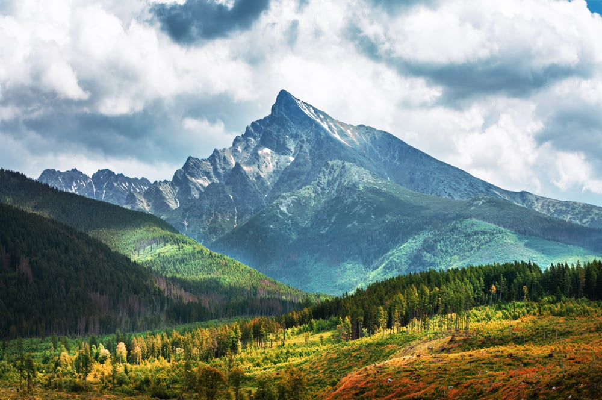

Tatry
skoč rovno na galeriu
Tatry sú nádherné.
Nájdeš tu plesá, ostré hrebene aj kamzíkov.

Čo tam uvidíš
Krajina sa počas výstupu mení z lesa až po holé skaly:
- Roháčske plesá
- kosodrevinu a horské lúky
- ostrý hrebeň Troch kôp
- kamzíky a svište
Túra na Tri kopy – postup
Klasická trasa má štyri hlavné zastávky:
- parkovisko Zverovka
- Ťatliakova chata
- Smutné sedlo
- vrchol Tri kopy

Galéria
Roháčska dolina na jar, pohľad od plesa.
 Roháčska dolina na jar, pohľad od plesa.
Roháčska dolina na jar, pohľad od plesa.
Roháče - wikipédia
Späť na úvod
dana.kozakova@strednaskolats.sk